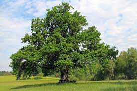

The history of Java is very interesting. Java was originally designed for interactive television, but it was too advanced technology for the digital cable television industry at the time. The history of Java starts with the Green Team. Java team members (also known as Green Team), initiated this project to develop a language for digital devices such as set-top boxes, televisions, etc. However, it was best suited for internet programming. Later, Java technology was incorporated by Netscape.
The principles for creating Java programming were "Simple, Robust, Portable, Platform-independent, Secured, High Performance, Multithreaded, Architecture Neutral, Object-Oriented, Interpreted, and Dynamic". Java was developed by James Gosling, who is known as the father of Java, in 1995. James Gosling and his team members started the project in the early '90s.
Currently, Java is used in internet programming, mobile devices, games, e-business solutions, etc. Following are given significant points that describe the history of Java.
1) James Gosling, Mike Sheridan, and Patrick Naughton initiated the Java language project in June 1991. The small team of sun engineers called Green Team.
2) Initially it was designed for small, embedded systems in electronic appliances like set-top boxes.
3) Firstly, it was called "Greentalk" by James Gosling, and the file extension was .gt.
4) After that, it was called Oak and was developed as a part of the Green project.
5) Why Oak? Oak is a symbol of strength and chosen as a national tree of many countries like the U.S.A., France, Germany, Romania, etc.
6) In 1995, Oak was renamed as "Java" because it was already a trademark by Oak Technologies.

7) Why had they chose the name Java for Java language? The team gathered to choose a new name. The suggested words were "dynamic", "revolutionary", "Silk", "jolt", "DNA", etc. They wanted something that reflected the essence of the technology: revolutionary, dynamic, lively, cool, unique, and easy to spell, and fun to say.
According to James Gosling, "Java was one of the top choices along with Silk". Since Java was so unique, most of the team members preferred Java than other names.
8) Java is an island in Indonesia where the first coffee was produced (called Java coffee). It is a kind of espresso bean. Java name was chosen by James Gosling while having a cup of coffee nearby his office.
9) Notice that Java is just a name, not an acronym.
10) Initially developed by James Gosling at Sun Microsystems (which is now a subsidiary of Oracle Corporation) and released in 1995.
11) In 1995, Time magazine called Java one of the Ten Best Products of 1995.
12) JDK 1.0 was released on January 23, 1996. After the first release of Java, there have been many additional features added to the language. Now Java is being used in Windows applications, Web applications, enterprise applications, mobile applications, cards, etc.